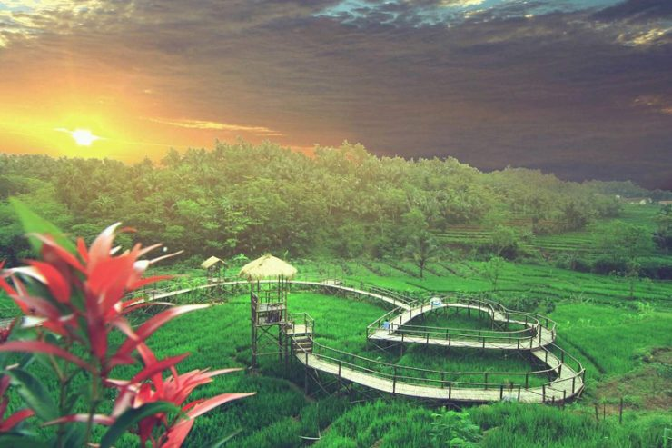
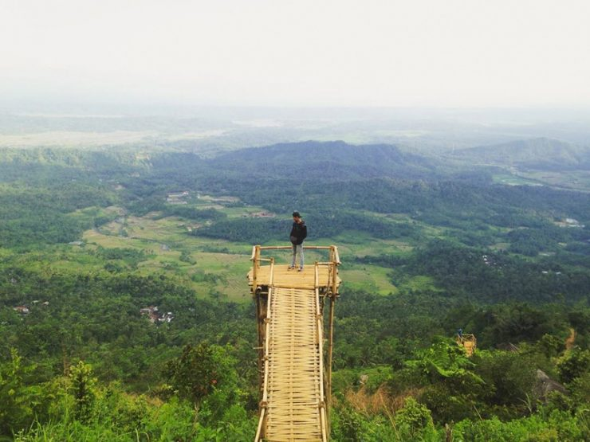
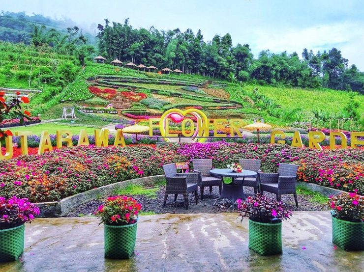

Jembatan Cinta Pring Wulung
Banyaknya pengunjung yang datang ke objek wisata Purbalingga ini bukannya tanpa alasan. Selain kekinian, Jembatan Cinta juga memiliki bentuk yang unik dan menarik. Sesuai dengan namanya, spot tersebut nampak seperti hati. Bangunannya tidak berada di atas danau atau sungai, melainkan di tengah-tengah persawahan.
Termasuk wahana yang baru, tentu saja Jembatan Cinta Pring Wulung masih bersih dan terawat. Karena itu pula, objek wisata yang terletak di Desa Panusupan ini langsung menjadi buruan wisatawan. Hampir sebagian besar dari mereka langsung mengeluarkan kamera di setiap spot unik yang tersedia.
Gunung Sendaren
Puncak Sendaren menyajikan pemandangan alam yang luar biasa indah untuk merelaksasi jiwa dan pikiran yang penat akan aktivitas sehari-hari. Selain itu tempat piknik di Purbalingga satu ini menyuguhkan pesona alam yang masih jarang dikunjungi oleh wisatawan.
Sehingga suasana yang di tawarkan masih asri dengan suasana tenang yang mendamaikan, dapatkan perjalanan liburan yang berkualitas. Tidak hanya itu, wisata murah meriah satu ini menawarkan berbagai macam spot foto instagenic. Nikmati spot instagenic untuk mendapatkan gambar terbaik di Puncak Sendaren Purbalingga.
Flower Garden Kutabawa
Kutabawa Rainbow Garden merupakan salah satu objek wisata yang sedang hits di Purbalingga saat ini. Lokasi wisata yang satu ini menghadirkan berbagai jenis bunga yang indah juga sangat cantik dengan warna-warna yang beragam.
Kehadiran Gunung Slamet yang sangat gagah menambah eloknya pemandangan di Kutabawa Rainbow Garden. Terdapat sedikitnya belasan jenis bunga cantik yang dapat kamu temui di Kutabawa Rainbow Garden.